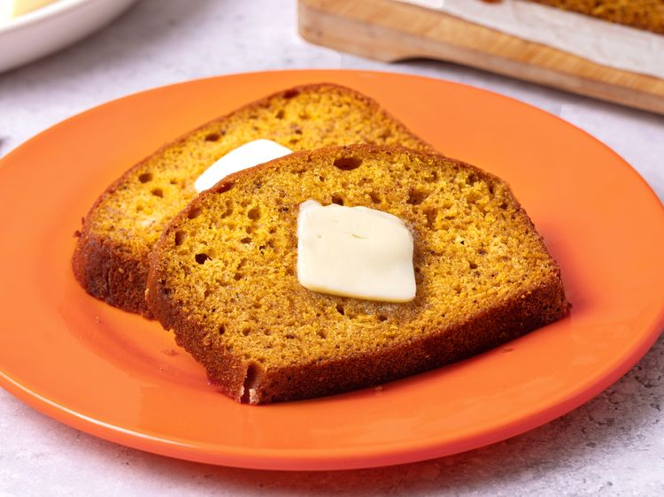

Home
Pumpkin Bread

Description
This pumpkin bread is a great old Maine recipe, moist and full of warm spices. The bread actually tastes even better the day after it is baked. It’s easy to make with canned pumpkin and perfect for holiday gift-giving!
This old-fashioned Maine pumpkin bread turns one can of pumpkin into two moist, warmly spiced loaves. Keep one and share or freeze the other, or bake both ahead—the flavor is even better the next day.
Ingredients
- 1 (15-ounce) can pumpkin puree
- 4 large eggs
- 1 cup vegetable oil
- 3 cups white sugar
- 1 teaspoon ground nutmeg
Steps
- Gather the ingredients. Preheat the oven to 350 degrees F (175 degrees C). Grease and flour two 9x5-inch loaf pans.
- Stir the flour mixture into the pumpkin mixture just until no dry streaks remain; do not overmix.
- Bake in the preheated oven until a toothpick inserted into the center of each loaf comes out clean or with a few moist crumbs, about 50 minutes